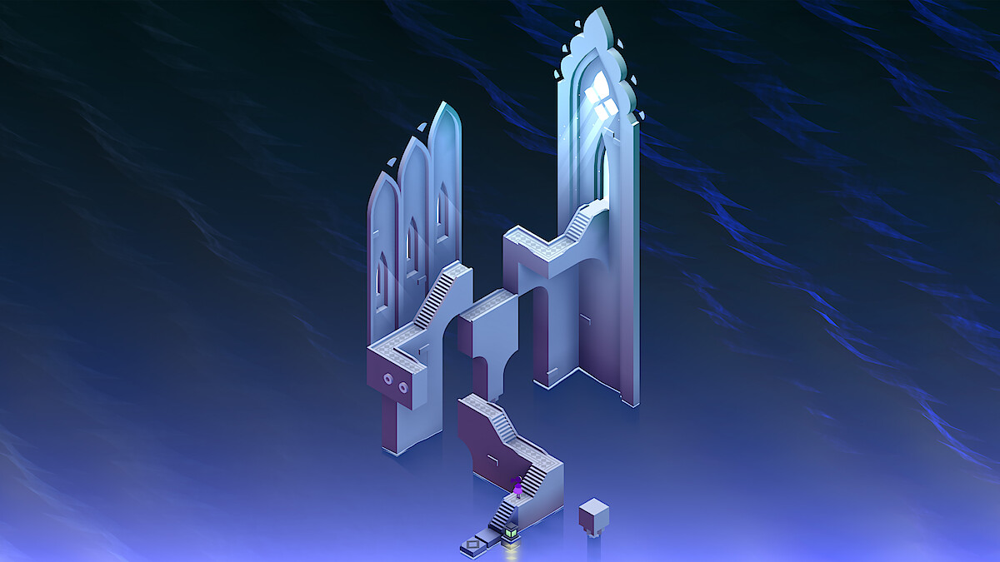

One of my first and favourite game of all time, Mario galaxy 1 and 2 has one of the most uniqe platforming mechanics. Released in 2007 and 2010 respectively, both games heavily utilise unconventional gravitational physics to create a fun and engaging gaming experience.
>
These games allow Mario to traverse sphereical planets, while jumping between gravitational fields, making him to fly through space or even orbit around different spheres. There are also different gravitational fields beside spheres, which add to the engagement. This innovative approach to spatial movement and direction created an engaging environment. Inspired by these mechanics, I decided adapt these games' gravitional mechanics in 2D and try to implement them into one of my own interactive medias.
Although Monument Valley is a relatively short 3D puzzle game, each level are packed with interesting and distinct mechanics. The game mainly revolves around optical illustion, creating new routes and altering perspectives to guid the characters towards the goal. While the concept seems straightforward, each puzzle are creativity and uniqe. The developers also build complexity by combining mechanics from earlier levels into more complicated challenges.
What especially inspired me the is the game's minimalist aesthetic, only using a few colors. Combined with their implementation of different mechanics, it inspired me to use a similar colors variation and simple mechanics to generate interesting medias.
Released in 2022, Iron lung is a short but deeply immersive and emotionally impactful horror game. Set in a post-apocalyptic world, the player as a prisoner is tasked to explore a blood ocean world in a makeshift submarine with a simple map.
However, the game only has three control: forward, backward and rotate. Althought the controls are very simple, this forced the player to be more creative and choose how to navigate the ocean. The simple approach demonstrates that more options can become more detrimental to creative freedom and cause the media to be unecessarily complicated, inspiring me to generate a simple, straightforward, yet engaging work.
Some notable Features on this website:
- A sphere that follows the cursor with a slinky like animation
- The background image which appear like a fractel, change and warp with the position of the cursor
- Background image changes and cursor sphere change depending on which button is pressed
The Story of the Moving Image exhibited at the ACMI showcased the first projections and optical illusions to the birth of film and many new innovations today. It is an incredible exhibition that taught me many lesser known history of the film industry
This exhibition in particular showcases a ingenius use of webcam and AI detection. The camera first records human motion, and through AI, transforms anyone in front of the projector into stylized stick figues.
Conway's Game of Life is a masterpiece of an artform for data visualization. With just a few lines of rule:
- Any live cell with fewer than two live neighbours dies, as if by underpopulation.
- Any live cell with two or three live neighbours lives on to the next generation.
- Any live cell with more than three live neighbours dies, as if by overpopulation.
- Any dead cell with exactly three live neighbours becomes a live cell, as if by reproduction.
There could already be infinite possibilites of how the game will play out. In one iteration, all cells might die immidiately, while some might live on for eternity, some might even self-organize into complex propultion machine or cells generators.

This highlights the creative freedom when player can choose a starting condition and observe how the algorithm evolves. While I am not implementing strict rules to my game, I plan explore the ability to let an algorithm evolve over time.
150 Years of Nature The BarabásiLab began the process with a data-driven analysis of the whole history of the journal. The team then mapped out the massive co-citation network connecting the 88,000 papers Nature had published since 1900.

Taken from every night during December 2024, the crown of the Salesforce Tower shows Greg Niemeyer's data animation, ultimately forming his art, Synchronicity.

His artwork demonstrates the beauty of waveforms, with variations in amplitude and frequency, they can generate stunning oranic patterns that mirror nature. This rythmic motion of nature greatly inspired me to base my interactive media on waves and their beauty, where I aim to produce organic complexity from simple waves.